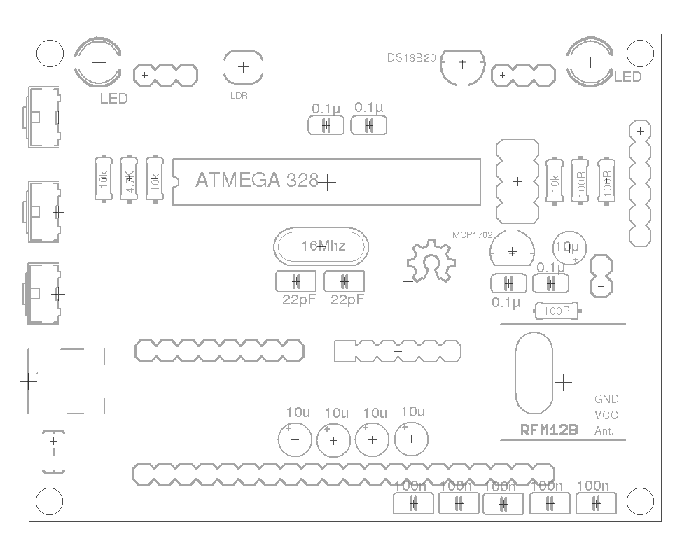

OpenEnergyMonitor - emonGLCD - Build Guide
Building an emonGLCD
Guide created and maintained by: Ian Chilton - please direct any suggestions or corrections to: ian [at] ichilton [dot] co [dot] uk.
If you get stuck, there is a forum and a lot of other information over at OpenEnergyMonitor.
Introduction
Here's how to build up an emonGLCD as a step by step guide.
OpenEnergyMonitor is project to develop and build open-source energy monitoring, control and analysis tools. The main focus at the moment is developing an end-to-end open-source energy monitoring system that is Arduino IDE compatible. More information can be found at: http://openenergymonitor.org
emonGLCD is a general purpose wireless graphical LCD display unit. Powered by an Atmega328 with an Arduino bootloader.
The emonGLCD is designed to drive a 128x64 GLCD display based on the ST7565 driver. The board has a built in HopeRF RFM12B wireless module to receive data from the emonTx energy monitoring node or an emonBase (Nanode-RF web-connected basestation) which in turn could pull aggregated data from a web-sever to be displayed.
The emonGLCD has an on-board temperate sensor, light sensor and two tri-color ambient indicator LED's.
The pcb is built in an orderly sequence starting with the resistors and small components that are low on the board and then working up to the bulkier parts like connectors. After soldering each component, you need to cut off the excess lead from the bottom using some cutters.
It is very easy to cause shorts which will make the board or specific parts of it not work. What i'd advise is that you take your time during the build, be precise, use minimal solder and carefully check each joint after soldering it. If you suspect any short, check it with a multimeter and fix any shorts there and then, before continuing.
Even if you have been soldering for years, i'd highly recommend these videos to get the right tools and improve your technique:
- EEVBlog Soldering Tutorial - Part 1: Tools
- EEVBlog Soldering Tutorial - Part 2: Soldering
- EEVBlog Soldering Tutorial - Part 3: Surface Mount
It's recommended you read through the whole of this guide and familiarise yourself with the steps before you start the actual build.
Step 1 - Identify Components and Kit Contents
Layout and identify the components from the kit.
 |
| From OpenEnergyMonitor - emonGLCD Build |
Here are all the components required to build your emonGLCD:
- The emonGLCD PCB
- 3x 10k Resistors (Brown, Black, Orange, Gold)
- 3x 100R Resistors (Brown, Black, Brown, Gold)>
- 1x 4.7k Resistor (Yellow, Violet, Red, Gold)
- 2x 22pF Ceramic Capacitors
- 9x 100nF (0.1uF) Ceramic Capacitors
- 5x 10uF Electrolytic Capacitors
- 1x Atmel ATMega328 - the main microcontroller
- 1x 28-Pin DIL Socket
- 1x RFM12B Radio Module - available in 433Mhz or 868Mhz versions
- 1x 165mm (433Mhz) or 82mm (868Mhz) Wire for RFM12B Antenna
- 1x 16Mhz Crystal - for the ATMega328.
- 1x USB Mini B Socket
- 1x Microchip MCP1702 3.3v Voltage Regulator
- 1x Bi-Colour LED's
- 1x 6-way header
- 1x DS18B20 Digital Thermometer
- 1x Light Dependant Resistor
- 1x LCD Display
- 1x Backlight
- Case + Spacers + Screws
 |
| From OpenEnergyMonitor - emonGLCD Build |
Ok, we're ready to start. Here is the PCB ready:
 |
| From OpenEnergyMonitor - emonGLCD Build |
 |
| From OpenEnergyMonitor - emonGLCD Build |
This is where everything should go:

{kind=link}
Step 2 - 10k Resistors
Start with the resistors. Bend each leg of the resistor over 90 degrees, right next to the body. It's recommended that you align them all in the same direction.
First we add the 3x 10k resistors - their colour code is: Brown, Black, Orange, Gold.
 |
| From OpenEnergyMonitor - emonGLCD Build |
Step 3 - 100R Resistors
Add the 3x 100R resistors - their colour code is: Brown, Black, Brown, Gold.
 |
| From OpenEnergyMonitor - emonGLCD Build |
Step 4 - 4.7k Resistor
Add the 4.7k resistor - it's colour code is: Yellow, Violet, Red, Gold.
 |
| From OpenEnergyMonitor - emonGLCD Build |
Step 5 - 22pF Ceramic Capacitors
Add the 2x 22pF ceramic capacitors - they are either blue (as per the photo) or small brown discs labelled 22 and with black tips.
 |
| From OpenEnergyMonitor - emonGLCD Build |
Step 6 - 100nF Ceramic Capacitors
Add the 9x 100nF ceramic capacitors - they are labelled 104.
 |
| From OpenEnergyMonitor - emonGLCD Build |
Step 7 - 10uF Electrolytic Capacitors
Add the 5x 10uF electrolytic capacitors. These must go the correct way round. The PCB is marked with a + symbol to indicate positive lead. The capacitors are marked with a white strip and a short leg to indicate the negative lead and a longer leg to indicate the positive lead.
 |
| From OpenEnergyMonitor - emonGLCD Build |
Step 8 - 16Mhz Crystal
Add the 16Mhz crystal - it can go either way round.
 |
| From OpenEnergyMonitor - emonGLCD Build |
Step 9 - LED's
Add the 2x LED's. They are Bi-Colour so have 3x legs. The PCB is marked A and B - the shortest leg should be towards 'B' and long leg towards 'A'. Remember that the rear of the case will cover these up so you might want to bend them through 90 degrees so they point upwards. I preferred to leave them so they shine into the back of the case so they are not so bright but still very visible when the case is on.
 |
| From OpenEnergyMonitor - emonGLCD Build |
Step 10 - MCP1702 3.3v Voltage Regulator
Add the MCP1702 3.3v Voltage Regulator - the flat edge goes towards the bottom of the board as per the markings. Note that it looks identical to the DS18B20 so you'll need to look carefully at the markings under some light to spot which is which.
 |
| From OpenEnergyMonitor - emonGLCD Build |
Step 11 - DS18B20 Digital Thermometer
Add the DS18B20 Digital Thermometer - the flat edge goes towards the bottom of the board as per the markings.
 |
| From OpenEnergyMonitor - emonGLCD Build |
Step 12 - Mini USB Socket
Add the mini USB socket.
 |
| From OpenEnergyMonitor - emonGLCD Build |
Step 13 - Light Dependant Resistor (LDR)
Add the Light Dependant Resistor (LDR). Note that this will be covered up by the back of the case so you will want to bend it through 90 degrees and have it pointing upwards rather than flat like I have it in the photo.
 |
| From OpenEnergyMonitor - emonGLCD Build |
Step 14 - 28 Pin DIL Socket
Add the DIL socket. The notch on the socket should go to the left of the board, as per the markings on the PCB.
 |
| From OpenEnergyMonitor - emonGLCD Build |
Step 15 - Programming Header
Add the 6-pin programing header at the bottom of the board. This will be covered up by the back of the case, so if you want to be able to program the device without removing the back, you'll either need to bend out the pins, or you can put it on sticking outwards by laying the pins flat over the pads on the under side of the board and soldering them on top.
 |
| From OpenEnergyMonitor - emonGLCD Build |
Step 16 - Voltage Check
We now need to check the voltage is correct before we add any of the expensive components. Power the board with either an FTDI programming cable or a mini USB and measure the voltage between the GND and VCC pads on the RFM12B socket. You should get 3.3v. If you get more than this, you should work out what has gone wrong before you continue.
 |
| From OpenEnergyMonitor - emonGLCD Build |
Step 17 - RFM12B
Add the RFM12B module. You can see the shapes of the crystal on the PCB. Position the module in place over the pads and gently apply heat and solder the opposite corners to hold it in place so you can solder the remaining pads.
 |
| From OpenEnergyMonitor - emonGLCD Build |
Step 18 - Antenna
Add the antenna by soldering the end to the bottom right pad on the RFM12B module.
 |
| From OpenEnergyMonitor - emonGLCD Build |
Step 19 - ATMega328
We can now add the ATMega328 chip. You will need to bend the pins in slightly by resting the chip sidewards on the desk and rolling it fowards to bend the pins in. Do the same with the other side.
 |
| From OpenEnergyMonitor - emonGLCD Build |
Step 20 - Backlight
The next step is to add the backlight. Glyn has put a video together explaining this part:
After following that, it should look like this:
 |
| From OpenEnergyMonitor - emonGLCD Build |
 |
| From OpenEnergyMonitor - emonGLCD Build |
Step 21 - Testing the LCD Display
You should now test the LCD display before soldering it as it is very hard to desolder later if something is wrong. This video explains the process:
The ATMega will come with Arduino Optiboot 4.4 bootloader (select Uno in IDE) but with no sketch uploaded. The correct sketch must be uploaded using Arduno IDE. You should use this sketch to test with.
Step 22 - LCD Display
We are now ready to fit the LCD Display.
First take the display, and place it through the holes on the PCB, but do not solder it yet.
Next, we need to fit the front of the case. Take the plastic spacers and use the screws to go through the front of the case into the spacers, then use the spacers with screw threads to go through the PCB into the spacers with the front, as shown here:
 |
| From OpenEnergyMonitor - emonGLCD Build |
This video will now guide you through getting the display in position.
Step 23 - LCD Display
Once you have the display in the correct position (just resting very lightly on the backlight), we need to solder it in place. Solder a just a few pins at first, check it's level and aligned and then solder the remaining pins.
 |
| From OpenEnergyMonitor - emonGLCD Build |
Step 24 - Back of Case
Now fit the back of the case using the remaining screws.
 |
| From OpenEnergyMonitor - emonGLCD Build |
We are now nearly finished!
 |
| From OpenEnergyMonitor - emonGLCD Build |
 |
| From OpenEnergyMonitor - emonGLCD Build |
Step 25 - Glue Backlight in Place
If you have a glue gun, place a small amount of glue between the backlight and the PCB to hold it in place.
 |
| From OpenEnergyMonitor - emonGLCD Build |
Step 26 - Stand
We can now add the stand.
 |
| From OpenEnergyMonitor - emonGLCD Build |
 |
| From OpenEnergyMonitor - emonGLCD Build |
 |
| From OpenEnergyMonitor - emonGLCD Build |
Completed Unit
Here is the completed unit running the emonGLCD Tester sketch.
 |
| From OpenEnergyMonitor - emonGLCD Build |